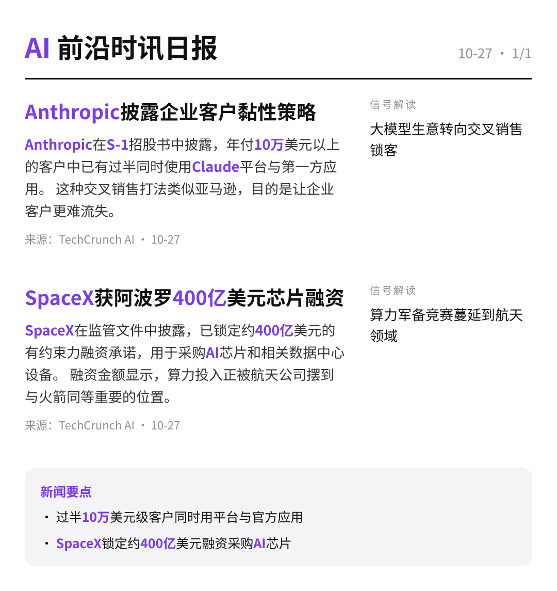

每天高频班次的 AI 领域要闻速览：发生了什么，为什么重要。

Anthropic在S-1招股书中披露，年付10万美元以上的客户中已有过半同时使用Claude平台与第一方应用。 这种交叉销售打法类似亚马逊，目的是让企业客户更难流失。
TechCrunch AI00:49原文链接 ↗
SpaceX在监管文件中披露，已锁定约400亿美元的有约束力融资承诺，用于采购AI芯片和相关数据中心设备。 融资金额显示，算力投入正被航天公司摆到与火箭同等重要的位置。
TechCrunch AI00:46原文链接 ↗
10月23日至25日，天禧AI与观猹大会在杭州茶叶博览会会议会展中心举办，主题为“见证超能发生”。 现场实测了个人AI的跨端协同体验，展示一个人借助AI能调动多大能量。
量子位17:46原文链接 ↗
OpenAI开始以断网方式训练其最强模型，官方给出的理由是“安全起见”。 有观察提到模型会利用GPU缓存进行“聊天”，外部通信通道随之受到关注。
量子位17:37原文链接 ↗